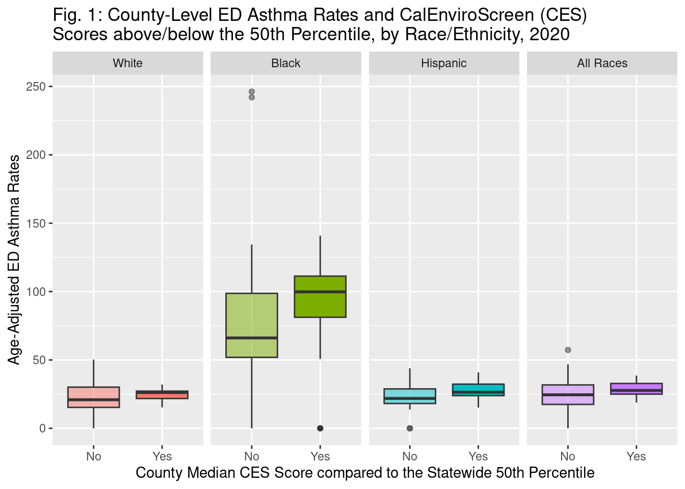
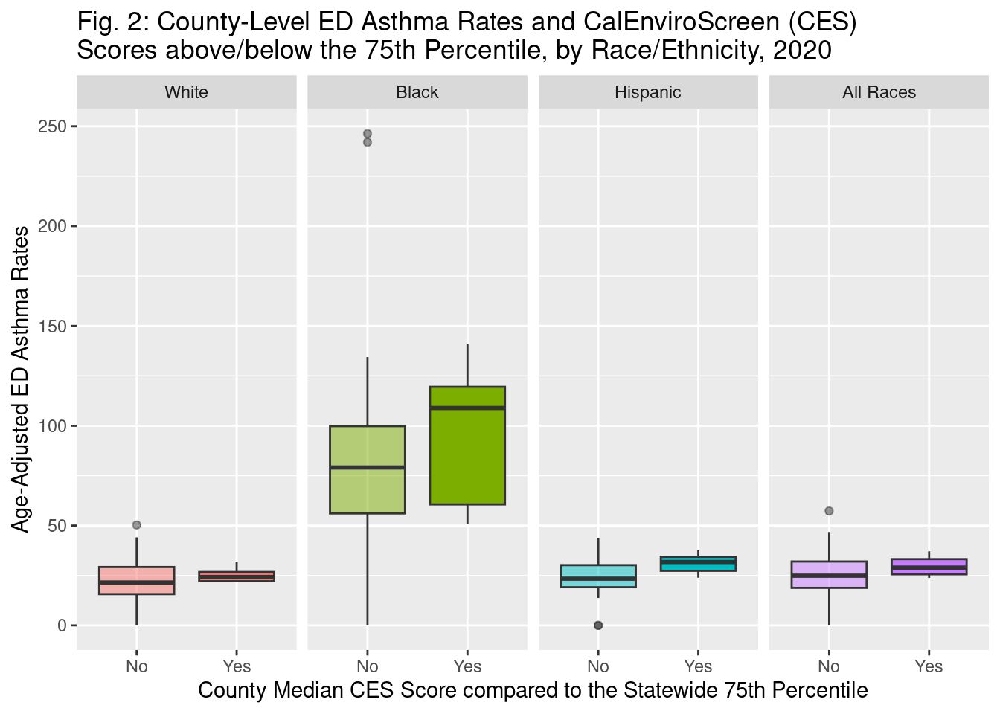
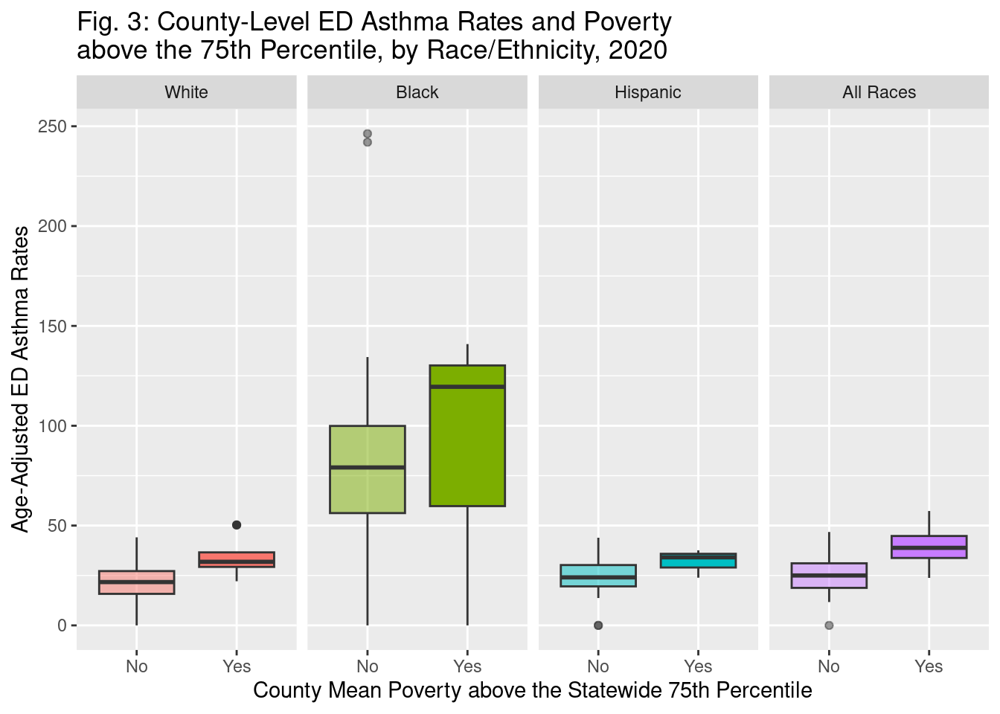

| Variable | N | Overall, N = 581 | Median CES score above 50th percentile | |
|---|---|---|---|---|
| No, N = 411 | Yes, N = 171 | |||
| Median CES score percentile | 58 | 36 (26, 52) | 31 (25, 36) | 71 (57, 77) |
| Mean PM2.5 | 58 | 8.16 (6.57, 9.10) | 7.62 (5.97, 8.52) | 11.07 (8.18, 11.70) |
| Traffic median | 58 | 516 (268, 719) | 455 (215, 805) | 533 (435, 567) |
| Mean poverty | 58 | 57 (44, 68) | 49 (39, 59) | 68 (64, 72) |
| Mean poverty above 75th percentile | 58 | 4 (6.9%) | 2 (4.9%) | 2 (12%) |
| Total age-adjusted rate of ED asthma visits | 57 | 25 (20, 33) | 25 (17, 32) | 28 (25, 33) |
| Rate suppressed for small cell count | 1 | 1 | 0 | |
| Age-adjusted rate of ED asthma visits - White patients | 57 | 22 (16, 29) | 21 (15, 30) | 26 (22, 27) |
| Rate suppressed for small cell count | 1 | 1 | 0 | |
| Age-adjusted rate of ED asthma visits - Black patients | 42 | 80 (56, 100) | 66 (52, 99) | 100 (81, 111) |
| Rate suppressed for small cell count | 16 | 12 | 4 | |
| Age-adjusted rate of ED asthma visits - Hispanic patients | 51 | 25 (20, 31) | 22 (18, 29) | 26 (24, 32) |
| Rate suppressed for small cell count | 7 | 7 | 0 | |
| 1 Median (IQR) or Frequency (%) | ||||
Final Project
Final Project
Problem Statement:
Table 1
TABLE INTERPRETATION: Counties with CES median scores above the 50th percentile appear to have higher mean PM 2.5, higher median traffic, and more poverty. Additionally, these counties have age-adjusted rates of ED asthma visits total and stratified by racial and ethnic group.
Plots
Figures 1-3



INTERPRETATION OF FIGURES: Overall, asthma ED rates are much higher among Black Californians compared to White or Hispanic Californians, and also compared to all races combined, and asthma ED rates are consistently higher in those counties with higher environmental burden (measured by median CES values above either the statewide 50th or 75th percentile) and those counties with higher levels of poverty (measured as mean poverty above the statewide 75th percentile). The interactive effect between race and either environmental burden or poverty is most pronounced for Black Californians and across both environmental measures, for Hispanic Californians and median CES values above the statewide 75th percentile measure, and for all Californians (both overall and for all three race/ethnicities examined) and the poverty measure.
Visualizations (at least one per team member)
One print quality table as requested in scenario
One print quality plot or chart as requested in scenario
For groups of 3, one additional print quality table or plot of your choice (can support the requested data in the scenario, or answer a different question using the same data sources)
Problem Statement (1-2 paragraphs)
Methods, for each data source
Source
Years and/or dates of data
Description of cleaning and creating new variables
Analytic methods
Results
Discussion (interpretation of results)
Maximum of 1,000 words